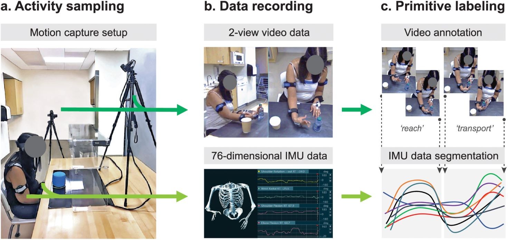
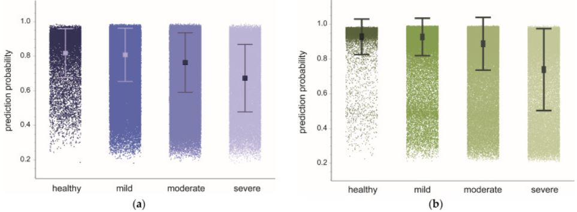

Related research papers
Towards data-driven stroke rehabilitation via wearable sensors and deep learning
Our work on "Towards data-driven stroke rehabilitation via wearable sensors and deep learning" presents a systematic comparison of machine learning methods for functional-primitive identification and introduces a novel model that outperforms existing techniques. The findings provide valuable insights with potential applications in healthcare, particularly those involving wearable sensors.
Notably, the work underscores the effectiveness of deep learning models for processing multivariate time series sensor data compared to traditional statistical feature-based approaches.
Additionally, it explores the importance of mapping different physical quantities to a common representation space and the use of adaptive feature-normalization techniques, such as instance normalization, to enhance model robustness in the face of data distribution shifts.
StrokeRehab: A Benchmark Dataset for Sub-second Action Identification
StrokeRehab: A Benchmark Dataset for Sub-second Action Identification introduces the StrokeRehab dataset, a high-quality multimodal dataset. StrokeRehab serves as a foundation for developing custom sequence-to-sequence models for counting primitives and offers several desirable properties.
It provides a benchmark for sub-second action identification, evaluates generalization in the presence of realistic distributional shifts, and enables data-driven quantification of rehabilitation dose.
PrimSeq: A deep learning-based pipeline to quantitate rehabilitation training
In our work, PrimSeq: A deep learning-based pipeline to quantitate rehabilitation training, developed the PrimSeq pipeline to enable the accurate and rapid counting of building-block functional motions, called primitives.
PrimSeq uses wearable sensors to capture rich motion information from the upper body, and custom-built algorithms to detect and count functional primitives in this motion data. We showed that our deep learning algorithm precisely counts functional primitives performed by stroke patients and outperformed other benchmark algorithms. We also showed patients tolerated the wearable sensors and that the approach is 366 times faster at counting primitives than humans.
PrimSeq thus provides a precise and practical means of quantifying functional primitives, which promises to advance stroke research and clinical care and to improve the outcomes of individuals with stroke.
Data-Driven Quantitation of Movement Abnormality after Stroke
Stroke commonly affects the ability of the upper extremities (UEs) to move normally. In clinical settings, identifying and measuring movement abnormality is challenging due to the imprecision and impracticality of available assessments. These challenges interfere with therapeutic tracking, communication, and treatment.
Thus, in our work, Data-Driven Quantitation of Movement Abnormality after Stroke, we sought to develop an approach that blends precision and pragmatism, combining high-dimensional motion capture with out-of-distribution (OOD) detection. We used an array of wearable inertial measurement units to capture upper body motion in healthy and chronic stroke subjects performing a semi-structured, unconstrained 3D tabletop task. After data were labeled by human coders, we trained two deep learning models exclusively on healthy subject data to classify elemental movements (functional primitives).
We tested these healthy subject-trained models on previously unseen healthy and stroke motion data. We found that model confidence, indexed by prediction probabilities, was generally high for healthy test data but significantly dropped when encountering OOD stroke data. Prediction probabilities worsened with more severe motor impairment categories and were directly correlated with individual impairment scores. Data inputs from the paretic UE, rather than trunk, most strongly influenced model confidence.
We demonstrate for the first time that using OOD detection with high-dimensional motion data can reveal clinically meaningful movement abnormality in subjects with chronic stroke.